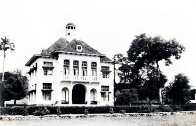
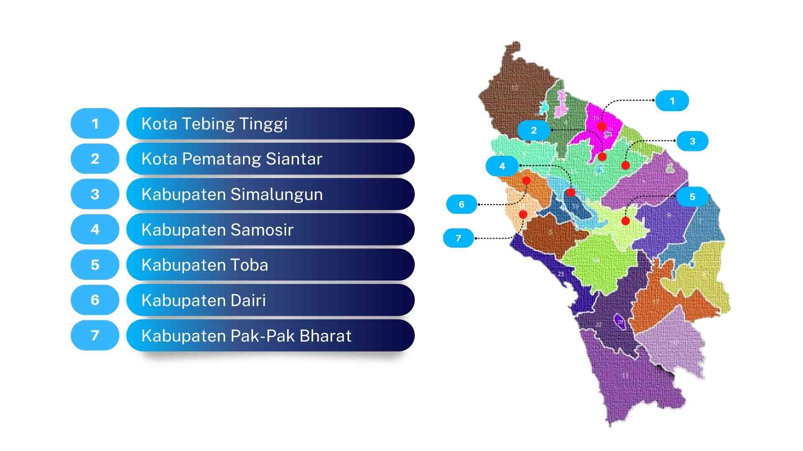
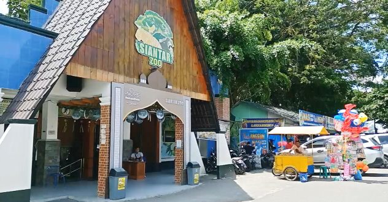
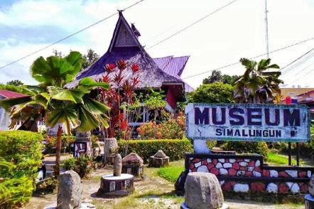

Sejarah Singkat

Pematangsiantar diambil dari gabungan kata "Pematang" (perkampungan/tempat tinggal raja) dan "Siantar" (dari
kata Siattar, sebidang tanah di Pulau Holing). Pematangsiantar adalah kota terbesar kedua di
Provinsi Sumatera Utara. Sebelum menjadi kota, dulunya daerah ini merupakan sebuah kerajaan yang dipimpin
oleh Dinasti Damanik. Pematangsiantar dikenal sebagai kota persinggahan strategis bagi wisatawan yang hendak
menuju Danau Toba. Kota ini juga terkenal dengan tingkat toleransinya yang sangat tinggi, menjadikannya salah
satu kota paling rukun di Indonesia.
Geografis

Pematangsiantar adalah kota yang unik karena posisinya sebagai enklave, yaitu wilayah kota yang seluruhnya
dikelilingi oleh Kabupaten Simalungun. Terletak di ketinggian 400 hingga 500 meter di atas permukaan laut, kota
seluas 79,97 km² ini menjadi jalur utama bagi siapa pun yang bepergian dari arah Medan menuju kawasan Danau Toba. Karena letaknya di dataran tinggi, suhu di kota ini tergolong sejuk, yakni berkisar antara 18°C sampai 30°C. Udara yang segar
ini dipengaruhi oleh posisi geografisnya yang berdekatan dengan pegunungan serta dikelilingi oleh banyak area hijau dan perkebunan. Hal tersebut membuat iklim di Pematangsiantar jauh lebih nyaman dan tidak panas dibandingkan daerah pesisir.
Wisata
Pematangsiantar menawarkan berbagai destinasi wisata menarik yang mencerminkan kekayaan budaya dan sejarahnya.
Beberapa tempat wisata yang wajib dikunjungi antara lain:
Siantar Zoo

Berdiri sejak 27 November 1931, Siantar Zoo adalah Taman Hewan Tertua ke-4 di Indonesia setelah Surabaya, Bandung dan Bukit
Tinggi. Selain hewan hidup, terdapat koleksi hewan yang telah diawetkan di Museum Zoologi yang merupakan bagian dari
jaringan Rahmat International Wildlife Museum & Gallery. Siantar Zoo pernah dikenal memiliki Liger (persilangan singa jantan
harimau betina), salah satu koleksi yang sangat jarang ditemukan di kebun binatang lain.
Museum Simalungun

Merupakan museum tertua di Sumatera Utara yang didirikan pada tahun 1939 oleh raja-raja Simalungun (Raja Marpitu) untuk
melestarikan adat istiadat dan budaya Batak Simalungun. Museum ini terletak di pusat Kota Pematang Siantar dan menyimpan
ratusan koleksi benda cagar budaya yang bernilai sejarah tinggi. Bangunannya didirikan menggunakan teknik arsitektur
tradisional Simalungun yang tidak menggunakan paku sama sekali. Konstruksinya sepenuhnya dibangun
tanpa paku, hanya mengandalkan sistem pasak dan ikatan kayu yang sangat kokoh, mencerminkan kearifan lokal yang tinggi.